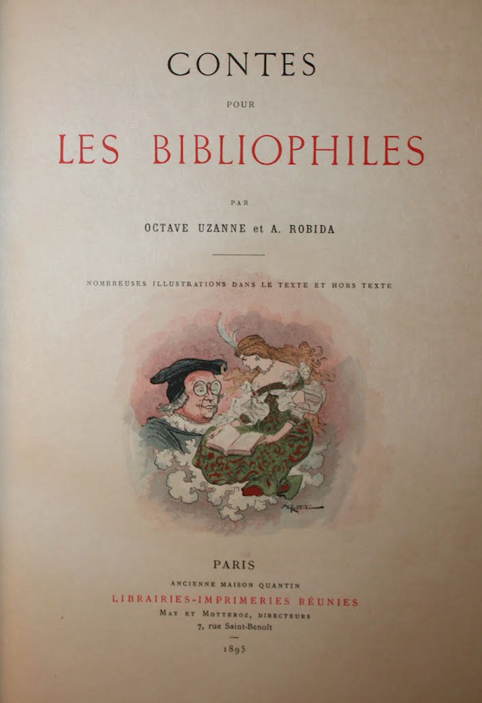

A uniquely futuristic vision of the changing mediascape was elaborated by
Octave Uzanne and
Albert Robida in their illustrated story "Contes pour les Bibliophiles", originally published in France in 1894. Octave wrote that as for the future of the printed page – “It will be abandoned”, except perhaps for some limited use in business and private communications. “The newspaper will go the same way”, since the printed word would no longer be satisfying compared to the new audio medium – and the thrilling experience of hearing the story actually being told. He concludes: “how happy we will be not to have to read any more; to be able finally to close our eyes”. The daily strain on the eyes from devouring news and essays, stories and novels, could at last be avoided as the ears absorbed the information, much faster and almost effortlessly.”For Uzanne, the death of print positively meant the end of a tyranny – the liberation from a debilitating slavery of the eyes.
Uzanne argued that reading causes fatigue and apathy. Words heard through the tube, on the other hand, would convey energy, and thus the gramophone must inevitably supplant the printed page. The way in which Uzanne imagined this future scenario, anticipates several contemporary issues regarding the distribution of content. 9

The illustrated book, "Contes pour les Bibliophiles" by Octave Uzanne and Albert Robida.
Uzanne and Robida give us predictions of a post-literate society.Newspapers are forgotten and printed books are over and done with. As some companies begin to create electronic books that will never be published in printed form, we need to remember... it was all predicted more than a hundred years ago.10